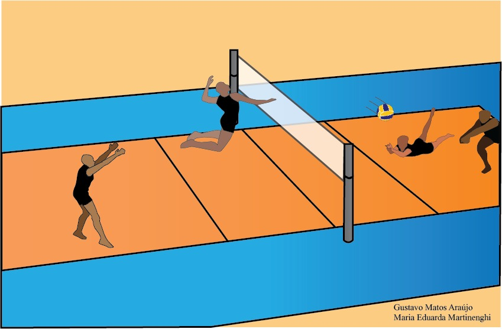

O Voleibol é um esporte praticado numa quadra dividida em duas partes por uma rede, possuindo duas equipes de seis jogadores em cada lado. O voleibol foi originalmente chamado de Mintonette, devido à sua semelhança com o Badminton. O objetivo da modalidade é fazer a bola passar sobre a rede de modo a que a bola toque no chão dentro da quadra adversária, ao mesmo tempo que se evita que os adversários consigam fazer o mesmo.
O vôlei foi criado em 9 de fevereiro de 1895 por William George Morgan nos Estados Unidos. O objetivo de Morgan, que trabalhava na "Associação Cristã de Moços" (ACM), era criar um esporte de equipes sem contato físico entre os adversários, de modo a minimizar os riscos de lesões. Inicialmente jogava-se com uma câmara de ar da bola de basquetebol e foi chamado Mintonette, mas rapidamente ganhou popularidade com o nome de volleyball.
Em 1947, foi fundada a Federação Internacional de Voleibol (FIVB). Dois anos mais tarde foi realizado o primeiro Campeonato Mundial de Voleibol. Na ocasião, só houve o evento masculino. Em 1952, o evento foi estendido também ao voleibol feminino. No ano de 1964, o voleibol passou a fazer parte do programa dos Jogos Olímpicos, tendo-se mantido até a atualidade.
O vôlei foi criado em 9 de fevereiro de 1895 por William George Morgan nos Estados Unidos. O objetivo de Morgan, que trabalhava na "Associação Cristã de Moços" (ACM), era criar um esporte de equipes sem contato físico entre os adversários, de modo a minimizar os riscos de lesões. Inicialmente jogava-se com uma câmara de ar da bola de basquetebol e foi chamado Mintonette, mas rapidamente ganhou popularidade com o nome de volleyball.
Em 1947, foi fundada a Federação Internacional de Voleibol (FIVB). Dois anos mais tarde foi realizado o primeiro Campeonato Mundial de Voleibol. Na ocasião, só houve o evento masculino. Em 1952, o evento foi estendido também ao voleibol feminino. No ano de 1964, o voleibol passou a fazer parte do programa dos Jogos Olímpicos, tendo-se mantido até a atualidade.
Antes do estouro do voleibol no Brasil, durante os anos 1980, a Seleção Brasileira se resumia a um único grande jogador. A dinastia de Antônio Carlos Moreno durou 21 anos e 366 jogos. Uma trajetória exemplar, iniciada aos dezessete anos, em que ele disputou sete campeonatos sul-americanos e quatro jogos Pan-Americanos. Participou também de quatro mundiais e cinco Olimpíadas.
Nos esportes coletivos, a primeira medalha de ouro olímpica conquistada por um país lusófono foi obtida pela equipe masculina de vôlei do Brasil nos Jogos Olímpicos de Verão de 1992. A proeza se repetiu nos Jogos Olímpicos de Verão de 2004 e nos Jogos Olímpicos de Verão de 2008 foi a vez da seleção brasileira feminina ganhar a sua primeira medalha de ouro em Olimpíadas.
A Seleção Masculina de Voleibol do Brasil possui os dois recordes mundiais de público na história do voleibol: em 26 de Julho de 1983, no Estádio do Maracanã, no Rio de Janeiro, 95 887 pessoas viram O Grande Desafio de Vôlei – Brasil X URSS, uma partida amistosa na qual o Brasil derrotou a então campeã olímpica e mundial, União Soviética, por 3-1, num recorde absoluto da história do esporte. No dia 6 de Julho de 1995, no Ginásio do Mineirinho, em Belo Horizonte, foi batido o recorde de público numa partida indoor: 25 326 torcedores superlotaram o ginásio para ver a Itália bater o Brasil por 3-2, na fase decisiva de classificação para as finais da Liga Mundial daquele ano.